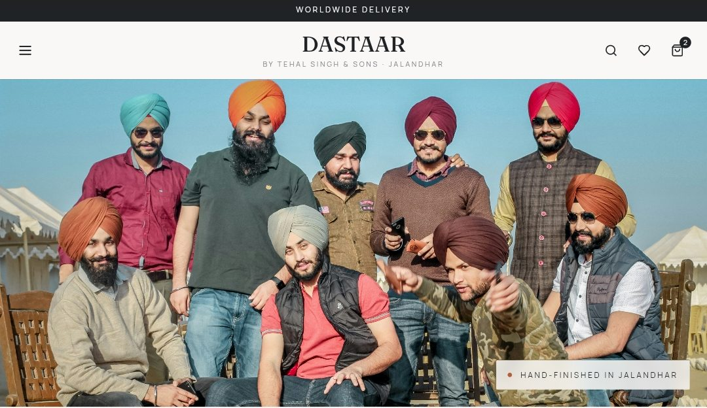

Virtuorigin
26 weeks, live projectSized a $150M+ market from 50 reports and 25 interviews, then built a 5-year go-to-market roadmap across 7 categories.
Hi, I'm
Product professional with 3.5 years across product, data analytics and engineering. MDI Gurgaon '26, ex-BlackRock, ex-Info Edge.
I turn messy user and business problems into products people use, and I bring the SQL to prove they worked.
This site is built like a product backlog. Every section has a yellow User story note. Hover over or tap one to see who that section is for and what they need.
Three products I owned end to end. Each one walks through the problem, the users, the customer journey and the impact.
I designed and built the online store for my family's turban business in Jalandhar. It has taken 100+ orders so far, shipped to India, Canada, the USA and Australia.
Read the case studyUsers opened the app to pay an EMI and left. I researched why and designed a discovery page to bring them back.
Read the case studyAn early-stage B-school community wanted a website for students, colleges and companies. I scoped the MVP, wrote the PRDs, designed the screens and planned the build.
Read the case studySized a $150M+ market from 50 reports and 25 interviews, then built a 5-year go-to-market roadmap across 7 categories.
Designed and built the booking flow for self-ride bike rentals: three ways into one booking, and one-way trips across four cities in Punjab.
View the code on GitHubConsultant, Product & Growth Strategy, US Consumer Lending Platform
Apr 2026 to now, GurugramProduct Management Intern, Digital Platforms
Apr to Jun 2025, PuneSenior Software Engineer, Technology (Shiksha)
Apr 2022 to Aug 2023, NoidaAnalyst, Securities Lending
Jul 2020 to Apr 2022, GurugramI'm a product manager who started as an engineer and grew up on data. I've shipped AI-powered consumer products, built LLM automations, and used funnels to find where users drop off and why.
I like the whole arc: talking to users, writing the PRD, prioritising the roadmap, then checking the numbers after launch to see if we were right.
Discovery, PRDs, roadmaps and launches at Bajaj Finance, Indus Insights and on DASTAAR (100+ orders).
SQL, Python, Mixpanel, CleverTap. Funnels and cohorts are how I think.
Two years building at Info Edge. I know what a sprint really costs.
Based in Gurgaon, India. Open to product management roles in consumer tech, fintech and AI products.
Taking my family's 50-year-old turban house in Jalandhar online. I owned it end to end: research, product, design and build.

Tehal Singh & Sons Pagri House has sold turbans in Jalandhar since 1973, trusted by families across Punjab and abroad. But everything happened over the counter: if you couldn't walk in, you couldn't buy.
Customers in other cities or abroad had to ask relatives to shop for them and guess colours over a phone call.
Knows his shade and wants it without the trip.
Gets: shop by colour and bestsellers
Trusts the shop but can't reach it.
Gets: worldwide delivery and a country code at checkout
Wants a gift that arrives ready to give.
Gets: Rakhi gift boxes and gift wrap
Knows the event, not the shade.
Gets: shop by occasion
Every path a shopper can take on DASTAAR, from landing to delivery. Tap any screen to enlarge it.
He arrives from a link a relative shared, or from search. Before he scrolls, he sees the heritage and the promise: find your colour, find your turban.
Not sure yet? He can read the shop's story (50+ years, 12+ colours, same hands, same craft), then go back to shopping.
Five ways in, all leading to the same product page. He starts from whatever he already knows.
All five lead to the product page
He makes the choices a shopkeeper would ask about at the counter, one at a time. Turbans sell by the metre, so the price updates with every choice.
Live total on the Add button: ₹95 × 5.5 m = ₹522.5
Small extras he'd buy anyway, one tick each. He can skip them without slowing down.
Or keeps browsing: "More in blue" suggests other shades from the same colour family.
A slide-out cart, then a two-step checkout. He confirms who he is before he enters an address, and picks his country code if he lives abroad.
The team calls to confirm the order and payment, then ships it from Jalandhar. So far that's 100+ orders to four countries.
The six calls that shaped the site, and why I made them.
People ask for a shade, not a product code. So colour drives the home page, the filters and the recommendations.
In the journey: steps 2 and 4Turbans are sold by the metre. The page multiplies rate by length and adds stitching, live: ₹95 × 5.5 m = ₹522.5.
In the journey: step 3First-time online buyers trust a person. WhatsApp verification plus a confirmation call keeps fake orders out and gives buyers a human touch.
In the journey: steps 5 and 6A new website has no reviews. The shop's 50 years, real photos and "hand-finished in Jalandhar" do that job instead.
In the journey: step 1Pins and gift wrap are things buyers already need. One tick each, shown after the turban is built.
In the journey: step 4Festivals drive turban gifting. The Rakhi campaign takes the top of the home page, with ready boxes or a build-your-own option.
In the journey: step 2orders placed through the site
countries shipped to: India, Canada, USA and Australia
colours, 2 fabrics and 5 lengths, all buyable online
a counter-only shop, now open to the world
| Before | After DASTAAR | |
|---|---|---|
| Where you can buy | At the counter in Jalandhar | Online: 100+ orders shipped to 4 countries |
| How you choose | In person or over the phone | By colour, occasion or bestseller |
| How price works | Worked out at the counter | Live price per metre on every page |
| Gifting | Wrap it yourself | Ready Rakhi boxes and gift wrap |
| Brand | A name on the shop sign | DASTAAR, a brand and a live store |
A top consumer lending firm's app had 52M+ users who opened it to pay an EMI and left. I designed a page to make them stay and discover.
The app gives one-touch access to 50+ financial products. But most users only touched the one product they already had: pay the EMI, check the loan, close the app.
Business saw a super app. Users saw a service app. That gap meant missed cross-sell, under-used products and a purely transactional experience, while rivals were turning into super apps.
I used the Double Diamond to move from open research to a focused design.
Personalised explore tiles. Became: personalised highlights.
Every category in one clean view. Became: the Explore products grid.
Every journey in 3 steps. Became: "3 easy steps to avail".
A What's New carousel. Became: the "Just launched" hero.
Short demo videos. Became: the quick video card.
Plain-language banners. Became: simple copy everywhere.
first found the app through an agent, not on their own
So: the app must teach users what it offersdon't scroll past the top of app pages
So: the entry point goes above the foldexplore new features only occasionally; 23% rarely or never
So: nudges and a What's New sectionpain point: too many irrelevant alerts
So: fewer, personalised updates in one placeFour personas built on socio-economic segments (SEC) from the survey and interviews.
Tries new features early. Wants offers that feel made for her.
Gets: "Just launched" and personalised highlights
Moves when there's a deal. Ignores generic banners.
Gets: deals for you and timely nudges
Needs to understand a product before he trusts it.
Gets: quick videos and 3-step explainers
Uses the app for one thing. Too many options scare him off.
Gets: few, simple choices at the top
How a typical user moves through the app today, and where Explore steps in. Scroll sideways on mobile.
Built from my wireframes and Figma work. Swipe to see all four.
High-fidelity versions of my wireframes, redrawn for this portfolio. Names and amounts are sample data.
engagement target in the first 2–3 months (clicks and time in Explore)
repeat visits target to the Explore page
funnel drop-off found in Mixpanel, turned into 3 UX fixes
stakeholders aligned across product, design, tech and business
Wireframes, team feedback, early user tests
Personalised picks, categories, offers for you
Calculators, learning content, basic personalisation
AI recommendations in real time
A/B tests, KPI tracking, UX tweaks
A 6-week live project with an early-stage startup. I took a kickoff call and a long wishlist to a build-ready MVP: PRDs, high-fidelity designs and a sprint plan.
The startup began as a community where B-school students mentor aspirants for GD-PI and help each other. The founders wanted a website that would serve students, and also bring in colleges and companies, the side that pays.
I started with a kickoff call and a long wishlist: internships, jobs, mentorship, courses, webinars, case competitions, plus pages for colleges and companies. Building all of it at once would have taken months.
Three student segments along the B-school journey, plus the two paying sides. I mapped each one's pains before choosing features.
Doesn't know where to start, drowns in generic advice, and prepares alone.
Needs: credible mentors and peers
Overwhelmed by summer and final placements, short on live projects and networks.
Needs: internships, jobs and placement prep
Wants to give back, but mentoring over LinkedIn doesn't fit a busy week.
Needs: a structured way to mentor
Want to reach B-school talent for training, hiring and case competitions.
Gets: a simple "work with us" form in the MVP
I scored every feature on reach, impact, confidence and effort. The top three made the MVP; the rest wait for real usage data.
| Feature | Reach | Impact | Confidence | Effort | Score |
|---|---|---|---|---|---|
| Internship and job listings | High | High | Medium | Low | |
| Mentorship booking | High | High | High | Medium | |
| Placement prep resources | Medium | Medium | High | Medium | |
| Cut line: below here waits for version 2 | |||||
| Case competition prep tools | Medium | High | Medium | High | |
| Alumni mentoring sign-up | Low | Medium | High | Medium | |
Alumni mentoring didn't need a feature at all: a Google Form covers it for now.
One platform PRD for the MVP, and one for each of the two features that carry it. Pick a tab.
A website where MBA students find internships and jobs, book mentors, and apply in one step. Colleges and companies reach them through a simple form.
MBA students hunt for openings across LinkedIn, job boards and WhatsApp groups, and most of what they find isn't meant for them. Mentorship happens informally, if at all. The community had no home online, and no way to bring in the paying side.
| Priority | What's included |
|---|---|
| Must | Sign-up with Google or email, profile and resume; opening listings with search and filters; opening details with one-step apply; mentor profiles with slot booking; admin through Google Sheets |
| Should | Saved openings; deadline and status emails; a simple dashboard of applications |
| Could | Recommendations from profile; case competition sign-up; similar openings |
| Won't, for now | Forum, payments, company portal, AI resume review |
Targets are set after a 4-week baseline, not guessed before launch.
| Risk | How we handle it |
|---|---|
| No users on day one | First mentor session free; launch through the existing community |
| Stale or expired openings | Deadline field is required; expired openings hidden by default; weekly sheet review |
| Mentor no-shows | Team confirms every booking; one free reschedule |
| Build takes too long | Google Sheets as the admin panel; no custom back office in version 1 |
Students waste time on openings that don't fit: wrong experience level, expired deadlines, unpaid roles they can't take. They need to narrow down fast and apply before the deadline.
As an MBA student, I want to filter openings by what matters to me, so that I only see roles I can apply to.
As an MBA student, I want to apply without retyping my details, so that applying takes about a minute.
As a student, I never want to see an opening that has closed, so that I don't waste an application.
| ID | Requirement | Priority |
|---|---|---|
| S1 | Keyword search across role, company and skills | Must |
| S2 | Filters: experience, work mode, domain, duration (1 to 6 months), stipend, hide expired | Must |
| S3 | Cards show role, company, location, mode, duration, stipend and deadline | Must |
| S4 | Detail page: overview, eligibility, skills, perks, company, with save, share and apply | Must |
| S5 | One-step apply modal with prefilled details and company questions | Must |
| S6 | Sort by deadline (default), newest or stipend | Should |
| S7 | Save openings and get a reminder 48 hours before the deadline | Should |
| S8 | Similar openings and a matching mentor on the detail page | Could |
Students want advice from someone who's been through the same placement or interview, but finding and scheduling that person is awkward. Alumni want to help, but only in slots that fit their week.
As an MBA student, I want to book a mentor for my goal, so that I prepare with someone who's done it.
As a student who doesn't know whom to pick, I want to be matched, so that choosing isn't a barrier.
As a mentor, I want to set my own slots, so that mentoring fits around work.
| ID | Requirement | Priority |
|---|---|---|
| M1 | Mentor list filtered by goal, domain, company and experience | Must |
| M2 | Mentor card: name, role, company, MBA year, rating, tags and next 3 slots | Must |
| M3 | Book a slot, with email confirmation and a calendar invite | Must |
| M4 | "Match me" request, matched by the team within 24 hours | Must |
| M5 | First session free for every student | Should |
| M6 | Rating and short review after each session | Could |
| M7 | Paid sessions and automatic matching | Won't, for now |
I turned my wireframes into high-fidelity designs and a site map. Here's the path a student takes. Tap any screen to enlarge it.
One site serves three audiences, so tabs at the top split them, the way BookMyShow separates customers from businesses. On a phone, the same page stacks into one column with a bottom bar.
A college or company? They get a simple "work with us" form, not a whole portal, until demand proves otherwise.
Three ways in, matched to the top-scored features. Internships get the most space, because that's the platform's strength.
All three lead to a detail page
Filters answer the questions MBA students actually ask about an internship. Each one shows as a chip that's one tap to remove.
Stipend, duration, start date and deadline sit in one strip. The apply card counts down to the deadline, and the side panel suggests a mentor who works at the same company.
The cross-sell: an internship page nudges students towards mentorship, turning a free visit into a possible paid session.
Apply opens a modal, not a new page. The resume, email and phone come from the profile, and only the company's own questions need an answer.
The dashboard shows every application's status, what's coming up this week, and how complete the profile is. The next deadline and mentor session are always one glance away.
Rose is reserved for deadlines, so urgency never gets lost among other colours. All company and mentor names in the designs are made up.
The calls that kept the MVP small enough to ship, starting with the biggest one.
| Unstop-style content-rich | Zomato Live-style minimal | Hybrid my pick | |
|---|---|---|---|
| Design complexity | High | Low | Medium |
| Time to build | Longer | Shorter | Moderate |
| Cost | Higher | Lower | Moderate |
| First visit | Complete but dense | Clean but thin | Focused and informative |
| Room to grow | Excellent | Limited | Good |
The hybrid homepage keeps Zomato Live's clean top (logo, search, one banner) and adds Unstop's category rows below, led by internships.
They scored highest and are the platform's strength, so they get the most homepage space. Courses stay small for now.
In the journey: step 2A matching algorithm is expensive to build. The team assigns mentors manually first, and automates once the patterns are clear.
In the mentorship PRD: M4The team adds openings to a Google Sheet that syncs to the site. That saves building an admin panel before anyone uses it.
In the platform PRD: scopeA new platform has no users. Free first mentorship sessions give students a reason to sign up in the early weeks.
In the mentorship PRD: M5Colleges and companies get a contact form, like Zomato Live's "list your business". A full portal waits until demand shows up.
In the journey: step 1Nothing frustrates a student more than a closed role. Expired openings are hidden by default, and deadlines get their own colour.
In the search PRD: S2I turned the PRDs into sprints, estimated the effort, and compared ways to build and host the site.
Sign-up and profiles, posting openings, search with filters
Mentor booking, application tracking, deadline and status emails
Basic recommendations, views and applications analytics
Staging, QA and bug fixes, then go live
Social login, resume parsing, custom admin panel, AI resume review
| Work | Hours |
|---|---|
| Back end: data, sign-up, openings, applications | 70 |
| Front end: homepage, search, profile, apply | 60 |
| Testing | 10–20 |
| Setup | 8 |
| Deployment | 5 |
| MVP total | ~155–165 |
Plus 30 hours for the AI resume and job-match tools, held for version 2.
In 6 weeks, the team went from a kickoff call to a scoped, designed and estimated MVP. The site didn't go live, so there are no usage numbers; here's what I handed over.
PRDs: the platform, search, and mentorship
competitors benchmarked, page by page
high-fidelity screens, desktop and mobile
weeks from build start to launch, fully estimated